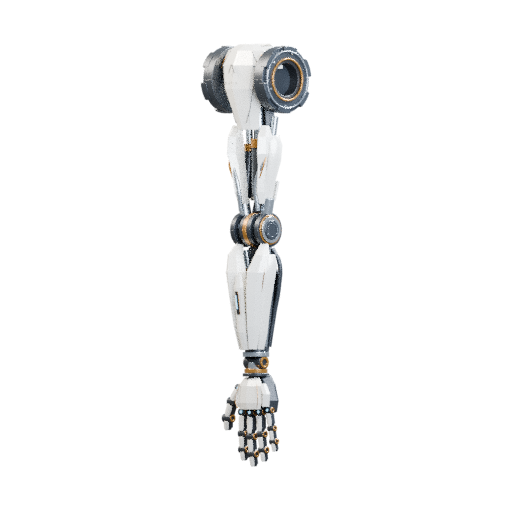
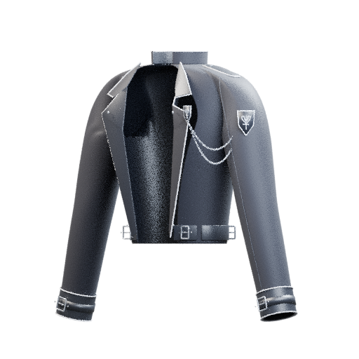
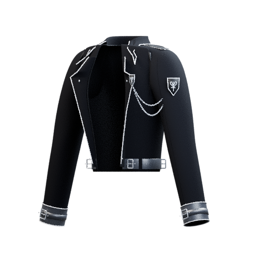
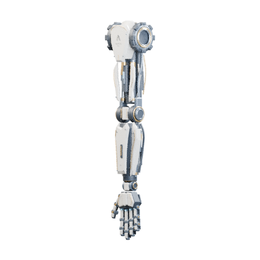
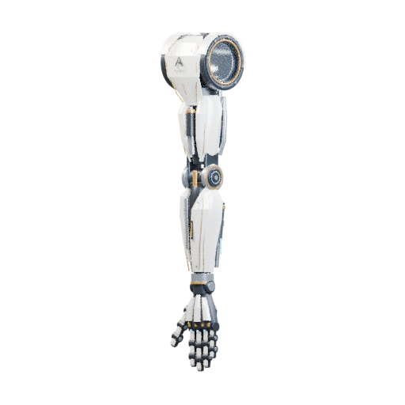
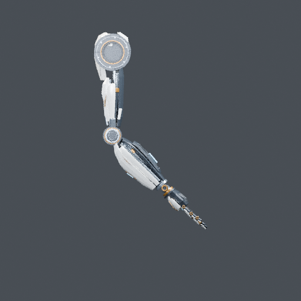
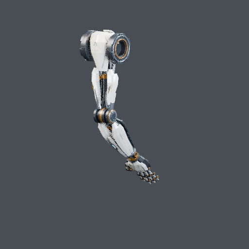

RefAs 2.0 development · two-asset dogfood
의상과 오토메일.
형상, 편집, 복원을 따로 확인합니다.
자켓은 기존 후보를 이어서 개선한 작업입니다. 오토메일은 같은 원본을 사용하는 일반 제작·고정 1.x·2.0의 새 제작 비교입니다. 실제 렌더와 원본을 함께 보고, 기술 검증과 외형 완성도를 구분합니다.
Current delivery candidates
현재 선택한 두 후보
이 패널은 전달 대상 모델의 개요입니다. 조건별 비교와 수정 전후 판단은 아래의 고정된 진단 뷰에서 확인하세요.
제복 자켓

AURIX MK-IV 오토메일


Unaltered source context
사용자가 제공한 원본 시트
시트 전체를 유지했습니다. 이미지를 열어 확대하고, 관찰한 디자인과 보이지 않는 부분의 추정을 구분하세요. 그림의 뷰 라벨은 보정된 카메라 데이터가 아닙니다.
제복 자켓 · 전체 시트

오토메일 · 전체 시트

Informed continuation · matched before / after
의상: 같은 뷰에서 수정 효과 확인
기존 후보와 문제를 알고 진행한 후속 개선입니다. 아래 두 이미지는 같은 진단 조건으로 비교하며, 최초 독립 제작 실험과 구분합니다.
개선 전


개선 후


의상 시각 판정: 원본을 먼저 본 독립 리뷰는 개선 후 후보를 선호했습니다. 두 후보 모두 미완성으로 남았습니다. 자세한 장단점은 원본 리뷰에 보존합니다.
실제 Blender Cycles CPU 직교 렌더입니다. 원본 시트와 카메라가 등록된 상태는 아닙니다. 이미지에서 보이는 개선과 객체·재질 보존, 정확한 복원은 각각 별도의 기록으로 확인합니다.
New construction · same-camera comparison
오토메일: 세 제작 조건의 공통 뷰
같은 원본으로 만든 일반 제작, 고정된 1.x, 2.0 후보입니다. 선택한 방향이 세 후보에 함께 적용됩니다. 자세·비율·연결 구조를 먼저 비교한 뒤 작은 하드웨어를 보세요.
일반 제작


고정 1.x


2.0 제작 경로

독립 시각 리뷰: 일반 제작이 근소하게 앞서고, 고정 1.x, 2.0 순입니다. 세 후보 모두 완성품 기준 미달입니다. 2.0은 큰 장갑 패널이 단순하고 뒤쪽 기계 구조가 성깁니다. 일반 제작과 1.x의 순위 차이보다 세 후보의 공통 결함에 대한 확신이 높습니다. 조건별 한 번의 탐색 비교이며 모델·스킬의 일반적 우위를 뜻하지 않습니다. 리뷰 원문과 검증 기록에 근거와 한계를 보존했습니다.
공통 비교는 실제 Blender Cycles CPU 직교 렌더를 사용합니다. 동일 카메라·조명은 후보 간 관찰 조건을 맞추며, 원본 카메라 보정이나 픽셀 기반 정답을 제공하지 않습니다.
Declared pose samples · separate from neutral comparison
관절과 부속품의 움직임 확인
중립 상태와 선언한 시험 각도에서 관절 중심, 따라 움직이는 부품과 주변 간섭을 관찰합니다. 한정된 포즈 검사는 전체 가동 범위나 물리 성능을 증명하지 않습니다.
측면


사선


관찰한 범위
이 페이지에 있는 실제 포즈와 방향만 확인한 것입니다. 중간 각도 전체의 충돌, 작동 하중이나 인간 장착 안전성을 보증하지 않습니다.
편집 가능한 관계
native의 부모·자식 관계, pivot, GLB 재개방 결과는 실행 기록에서 확인합니다. 렌더만 보고 rig나 animation 전달을 추정하지 않습니다.
복원
원래 transform과 선택한 revision의 파일 복원은 기록된 검사 범위로 판단합니다. 모양이 비슷해 보인다는 것과 정확한 복원은 다른 결과입니다.
Read the claim with its evidence
각 결과가 말해 주는 범위
원본 충실도: 전체 실루엣, 주요 비율, 고유한 형태와 재질을 원본에 대조합니다. 보이지 않는 구조와 모순된 치수의 해석은 가정으로 남습니다.
기술적 동작: native 재개방, GLB 출력·재수입, 부분 수정 보존, revision 복원은 실행 기록이 뒷받침하는 범위입니다. 테스트 통과가 완성품·게임 엔진 적합성 승인을 대신하지 않습니다.
일반화: 자켓의 후속 개선과 새로운 오토메일 제작은 출발 조건이 다릅니다. 두 결과나 한 번의 조건별 비교로 모델·릴리즈의 보편적인 우위를 선언하지 않습니다.